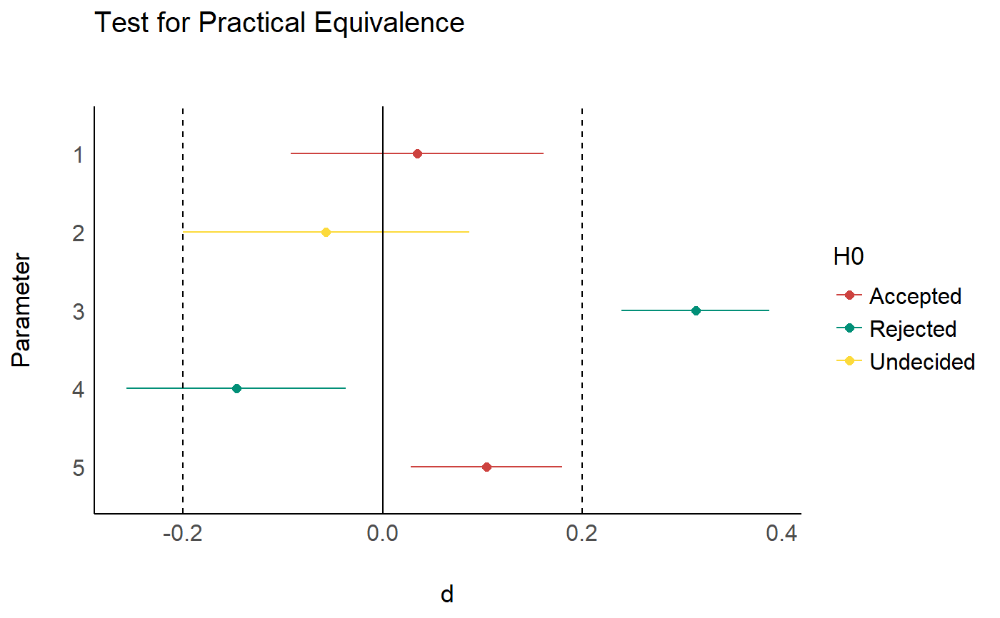
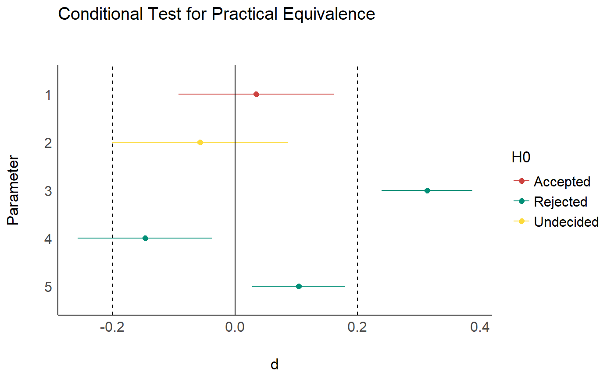
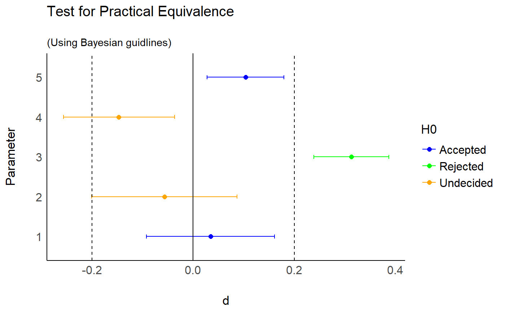

Perform a Test for Practical Equivalence for indices of effect size.
# S3 method for effectsize_table equivalence_test( x, range = "default", rule = c("classic", "cet", "bayes"), ... )
| x | An effect size table, such as returned by |
|---|---|
| range | The range of practical equivalence of an effect. If a single value is provided,
the test is done against |
| rule | How should acceptance and rejection be decided? See details. |
| ... | Arguments passed to or from other methods. |
A data frame.
The CIs used in the equivalence test are the ones in the provided effect size table.
For results equivalent (ha!) to those that can be obtained using the TOST approach (e.g., Lakens, 2017),
appropriate CIs should be extracted using the function used to make the effect size table
(cohens_d, eta_squared, F_to_r, etc). See examples.
"classic" - the classic method:
If the CI is completely within the ROPE - Accept H0
Else, if the CI does not contain 0 - Reject H0
Else - Undecided
"cet" - conditional equivalence testing:
If the CI does not contain 0 - Reject H0
Else, If the CI is completely within the ROPE - Accept H0
Else - Undecided
"bayes" - The Bayesian approach, as put forth by Kruschke:
If the CI does is completely outsie the ROPE - Reject H0
Else, If the CI is completely within the ROPE - Accept H0
Else - Undecided
Campbell, H., & Gustafson, P. (2018). Conditional equivalence testing: An alternative remedy for publication bias. PLOS ONE, 13(4), e0195145. https://doi.org/10.1371/journal.pone.0195145
Kruschke, J. K. (2014). Doing Bayesian data analysis: A tutorial with R, JAGS, and Stan. Academic Press
Kruschke, J. K. (2018). Rejecting or accepting parameter values in Bayesian estimation. Advances in Methods and Practices in Psychological Science, 1(2), 270-280. doi: 10.1177/2515245918771304
Lakens, D. (2017). Equivalence Tests: A Practical Primer for t Tests, Correlations, and Meta-Analyses. Social Psychological and Personality Science, 8(4), 355–362. https://doi.org/10.1177/1948550617697177
For more details, see bayestestR::equivalence_test().
# \donttest{ model <- aov(mpg ~ factor(am) * factor(cyl), data = mtcars) es <- eta_squared(model) equivalence_test(es, range = 0.15)#> # Test for Practical Equivalence #> #> ROPE: [0.00 0.15] #> #> Parameter | Eta_Sq_partial | 90% CI | H0 #> ------------------------------------------------------------------ #> factor(am) | 0.63 | [0.42, 0.75] | Rejected #> factor(cyl) | 0.66 | [0.45, 0.77] | Rejected #> factor(am):factor(cyl) | 0.10 | [0.00, 0.27] | Undecidedds <- t_to_d(t = c(0.45, -0.65, 7, -2.2, 2.25), df_error = c(675, 525, 2000, 900, 1875), ci = 0.9) # TOST approach equivalence_test(ds, range = 0.2)#> # Test for Practical Equivalence #> #> ROPE: [-0.20 0.20] #> #> d | 90% CI | H0 #> ---------------------------------- #> 0.03 | [-0.09, 0.16] | Accepted #> -0.06 | [-0.20, 0.09] | Undecided #> 0.31 | [ 0.24, 0.39] | Rejected #> -0.15 | [-0.26, -0.04] | Rejected #> 0.10 | [ 0.03, 0.18] | Accepted#># }